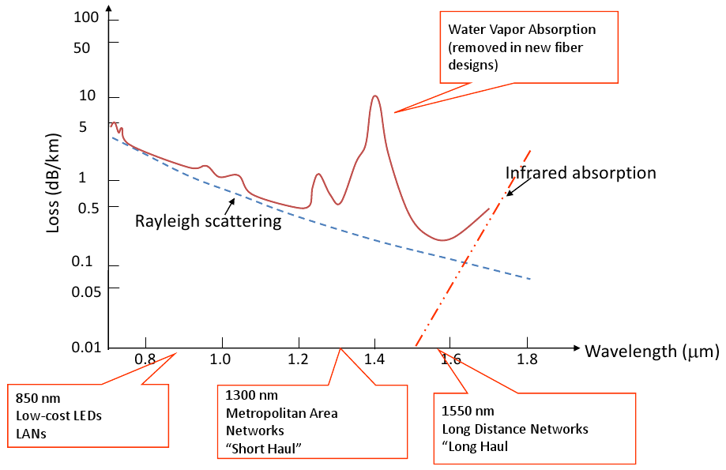

10Base5 ethernet used vampire taps in order to connect devices to the ether. After that 10Base2 (or Thinwire) cables were employed. They were simpler and had T junctions instead of the vampire taps. But still just essentially a single piece of wire.
Today we used twisted pair cabling (10BaseT - T for Twisted pair), having a range of 500m.
All of the above ethernet types use Manchester encoding in order to transmit bits.
100BaseT uses 1 pair of the cable for each direction of communication, and 1000BaseT uses 2 pairs of cable in each direction.
For 10GBaseT (10 gigabit twisted pair) it could not be implemented early on since the hardware generated to much heat, using 25 watts. PCI standards enforce that it could not generate that much heat, and be sold to the public.
People wanted to run ethernet over optical fibres. 10BaseFL used 850nm (don’t worry about what that means) and has a range of 2KM. Mostly it was used to connect standard twisted pair networks over long distances.
Then 100BaseFX (1200nm 2KM), 100BaseSX (850nm) and 100BaseLX (1300nm 10/20/40KM) were introduced. There re event more variants than these.
Optical fibre works by using a light source (LASER, or LED) to generate a continuous light. THe signal is modulated onto the light and received by a photodetector on the other end.
This could be done over very long distances (greater than 1000Km) and achieve very high speeds (greater than 40 Gbps/wavelength) and is also nearly error-free, since it is immune to most external influences unlike the electrical based twisted pair BaseT.
Fibre has a profound influence on network architecture and pretty much dominates any long distance transmission.
Light is modulated by splitting the light along two paths, and slowing the first photon down such that it collides with the second photon. This cancels out the light and provides darkness.
Inside the cable total internal reflection is used to keep the photons inside, thus if you bend the cable two harshly the light will escape the cable and render the cable useless.
Multimode fibre allow multiple light rays to follow different paths. These different paths can interfere with each other and cause dispersion. This means the wave forms can be changed by the time they reach the end.
Single-mode fibre provides only enough space to carry one direct light ray, and are much faster than multimode. A width of 8 microns will be small enough to enforce a single wave path, however manufacturing techniques had to evolve in order to reliably create a fibre this thin.
Advantages:
Disadvantages:
Rayleigh scattering Is a function which defines how much loss you will experience at different wavelength of light used in a fibre-optic cable per kilometre. However environmental effects cause deviation from this function as displayed by the red line in the graph below. Different grades of fibre provide subtly different lines.
It cheaper to build light emitters which operate at the lower wavelengths, but lower wavelengths experience higher loss. So it is essentially a cost-efficiency balance.
So different wavelengths carry separate signals, which are multiplexed into a shared optical fibre. A standard single fibre today can carry 160 wavelengths at 10Gbps per wavelength coming to a grand total of 1.6 Tbps.
The maximum span of an optical signal is determined by the available power & the attenuation. For example if 30dB of power is available then at 550nm the optical signal attenuates at 0.25dB per km. So the max span is 30dB/0.25 km/dB = 120Km.
Optical amplifiers amplify optical signal (with no equalisation or regeneration) but the number of these optical amplifiers is limited in any given path due to certain impairments.
The optical signal must be regenerated when this limit is reached using electrical devices and not optical ones. The signal is converted form optical-to-electrical (O-to-E) and the equalised, the signal is detected and the retransmitted (using E-to-O). It’s expensive.